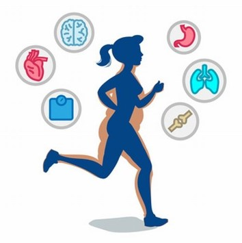

Introducción
Bienvenidos a nuestra página, donde exploraremos temas esenciales para tu bienestar físico, emocional y social. Aquí podrás encontrar información valiosa sobre el Violentómetro, que te ayudará a identificar y prevenir situaciones de violencia en diferentes contextos. También hablaremos sobre la importancia de la Salud Física, brindándote consejos prácticos para mantenerte activo, cuidar tu cuerpo y llevar una vida más saludable. Además, abordaremos el tema de la Salud Mental, dándote herramientas para manejar el estrés, la ansiedad y fortalecer tu bienestar emocional, porque tu salud mental es igual de importante que tu salud física.
Uno de los aspectos clave de tu bienestar tiene que ver con las Relaciones Juveniles. Las relaciones que cultivamos durante nuestra juventud juegan un papel fundamental en nuestro desarrollo emocional y social. Aprender a establecer relaciones sanas, ya sea con amigos, familiares o parejas, es crucial para nuestro bienestar general. A menudo, los jóvenes pueden sentirse confundidos acerca de lo que significa tener una relación saludable, ya que las emociones intensas y las experiencias nuevas pueden hacer que sea difícil identificar lo que es bueno o malo en una relación.
Noviazgo
El noviazgo es una etapa en las relaciones románticas que suele ocurrir entre dos personas que se están conociendo en un contexto sentimental. Esta etapa se caracteriza por el desarrollo de una relación más profunda y significativa que la amistad, pero que aún no ha llegado al compromiso formal de una relación de pareja estable o matrimonio.
Etapas
Inicio de la Relación: Generalmente comienza con el interés mutuo y el deseo de conocerse mejor. En esta etapa,
las parejas suelen realizar actividades juntos y explorar sus intereses comunes.
Desarrollo de la Relación: A medida que la relación avanza, las parejas pueden empezar a enfrentar desafíos y aprender a manejar los conflictos. La comunicación y la resolución de problemas son clave en esta etapa.
Consolidación: Si la relación continúa desarrollándose positivamente, puede llegar a una etapa de consolidación, donde ambos individuos se sienten más seguros y comprometidos con el futuro de la relación.
Aspectos Psicológicos y Emocionales
Expectativas y Metas: Las personas suelen tener expectativas y metas en una relación de noviazgo, que pueden incluir el deseo de encontrar una pareja a largo plazo o simplemente disfrutar de la compañía mutua.
Apoyo Mutuo: El noviazgo también implica brindar apoyo emocional y estar presente para la pareja en momentos importantes. Es una oportunidad para crecer juntos y fortalecer la conexión.
Factores de Éxito y Desafíos
Factores de Éxito: La comunicación abierta, el respeto mutuo, y la comprensión son factores importantes para una relación de noviazgo exitosa. La capacidad de adaptarse y comprometerse también juega un papel crucial.
Desafíos: Los desafíos pueden incluir diferencias en expectativas, conflictos no resueltos, y problemas de comunicación. Superar estos desafíos puede fortalecer la relación si se maneja adecuadamente.
Violencia
La violencia en el noviazgo es un problema grave que puede tener consecuencias profundas en la salud física, emocional y psicológica de las personas involucradas. Se refiere a cualquier forma de comportamiento abusivo o coercitivo que ocurre en una relación de noviazgo. La violencia en el noviazgo puede manifestarse de diversas maneras, y es crucial entender sus diferentes formas, señales de advertencia y formas de prevención y apoyo, algunos ejemplos incluyen:
Formas de Violencia en el Noviazgo
1. Violencia Física:
- Uso de la fuerza física para causar daño o controlar a la pareja. Puede incluir golpes, empujones, patadas, o cualquier forma de agresión física.
- Ejemplos: Golpes, estrangulación, agresiones con objetos.
2. Violencia Psicológica o Emocional:
- Comportamientos que buscan controlar, humillar o degradar a la pareja a nivel emocional.
- Ejemplos: Insultos, amenazas, manipulación emocional, aislamiento de amigos y familiares.
3. Violencia Sexual:
- Cualquier actividad sexual no consensuada. Incluye presionar para tener relaciones sexuales, coacción sexual o cualquier forma de abuso sexual.
- Ejemplos: Forzar a la pareja a tener relaciones sexuales, coerción para participar en prácticas sexuales no deseadas.
4. Violencia Económica:
- Control o abuso relacionado con el dinero y los recursos económicos.
- Ejemplos: Impedir que la pareja trabaje, controlar sus gastos, o tomar decisiones financieras sin consultar.
5. Violencia Verbal:
- Uso de palabras y lenguaje para menospreciar o controlar a la pareja.
- Ejemplos: Insultos, gritos, comentarios despectivos.
Señales de Advertencia
1. Control Excesivo:
- Comportamientos como revisar el teléfono de la pareja, limitar su libertad o decidir con quién pueden o no pueden relacionarse.

2. Celos Extremados:
- Celos intensos y frecuentes sin justificación, que pueden llevar a acusaciones infundadas y comportamientos posesivos.
3. Aislamiento:
- Intentos de aislar a la pareja de sus amigos y familiares, lo que puede hacer que la víctima dependa completamente del agresor.
4. Manipulación Emocional:
- Uso de tácticas para hacer que la pareja se sienta culpable o que dude de su propia percepción de la realidad.
5. Agresividad o Intimidación:
- Comportamientos intimidatorios o agresivos, como lanzar objetos, golpear paredes, o amenazas de violencia.

Salud mental y física
1. Salud Física:
- Lesiones físicas, problemas de salud a largo plazo, y estrés físico.

2. Salud Emocional y Psicológica:
- Ansiedad, depresión, baja autoestima, trastorno de estrés postraumático (TEPT), y otros problemas de salud mental.

3. Impacto en las Relaciones Sociales:
- Aislamiento de amigos y familiares, dificultades en otras relaciones interpersonales.
4. Impacto en la Educación y el Trabajo:
- Bajo rendimiento en el trabajo o en los estudios debido al estrés y la distracción provocados por la violencia.